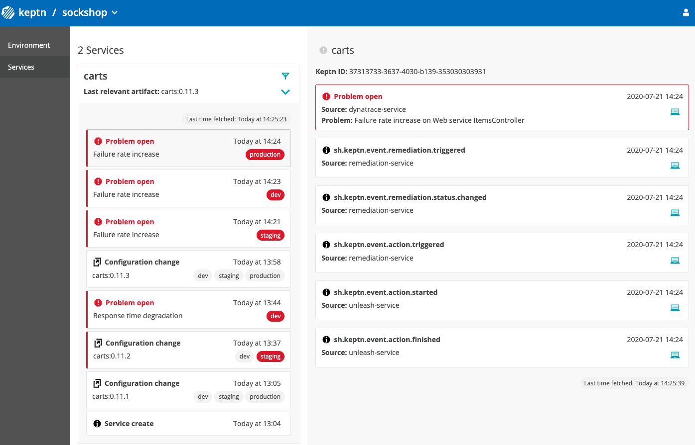

In this tutorial you'll get a full tour on how to run Keptn on Code Ready Containers.
Code Ready Containers gets you up and running with an OpenShift cluster on your local machine in minutes.
We have provided some helper scripts and files for you to make the tutorial more frictionless.
Download the resources for this tutorial via git:
git clone --branch release-0.1.0 https://github.com/keptn-sandbox/openshift-crc-tutorial
cd openshift-crc-tutorial/resources
For running Code Ready Containers a machine with at least 16 GB of RAM is recommended.
- Download CRC from this website into the current folder that we have created inthe previous step: https://developers.redhat.com/products/codeready-containers/download
There are versions available for Mac OS, Linux, and Windows. This tutorial has been tested on version TODO and the instructions here are for the Mac/Linux version. - Copy your pull secret to the current folder in a file called
pull-secret.txt.
- Define the CodeReady Container version and your operating system - please adjust those variables to fit your environment! Execute these commands depending on your environment.
For Linux that might look like this.export OS=macos export CRCVERSION=1.14.0export OS=linux export CRCVERSION=1.14.0 - Edit
crc.shif you want to configure the memory and CPU cores available to CodeReady Containers. - Execute the setup script
./crc.sh - Once finished, the script will provide you with some output:
This will install OpenShift 4.5, display the login info and open a browser window with the OpenShift console. INFO To access the cluster, first set up your environment by following 'crc oc-env' instructions INFO Then you can access it by running 'oc login -u developer -p developer https://api.crc.testing:6443' INFO To login as an admin, run 'oc login -u kubeadmin -p yourpassword https://api.crc.testing:6443' INFO INFO You can now run 'crc console' and use these credentials to access the OpenShift web console Started the OpenShift cluster WARN The cluster might report a degraded or error state. This is expected since several operators have been disabled to lower the resource usage. For more information, please consult the documentation Opening the OpenShift Web Console in the default browser... - From the previous output, we still need to execute some commands. To access the cluster, first set up your environment by following ‘crc oc-env' instructions.
crc oc-env eval $(crc oc-env) - Login as an
adminwith the command that from the log output above. Please make sure to use the correct password that you see on your own screen.oc login -u kubeadmin -p yourpassword https://api.crc.testing:6443
Other options to run CRC
If you want to run it on a different environment than you local machine, check out these additional resources.
OpenShift 4 UPI Installation on Libvirt/KVM
CodeReady Containers: complex solutions on OpenShift + Fedora
If you want to run it on a VM in GCP, please make sure nested virtualization is enabled. Follow this official guide if not yet enabled.
Now we are going to install the OpenShift serivce mesh that is needed for our tutorial into the CRC cluster.
The script that is provided will create the following resources:
- Install Kiali, Jaeger and Service Mesh Operators
- Deploy the Service Mesh control plane in istio-system.
- Create the Service Mesh member roll.
- Execute the script:
./mesh.sh - Verify that all pod in the
istio-namespaceare running (might take a while).
You should see a similar result:oc get podsNAME READY STATUS RESTARTS AGE grafana-6787dc695-b9srg 2/2 Running 0 56s istio-citadel-6f9b74b754-2npp9 1/1 Running 0 3m43s istio-egressgateway-64ffbdb8c8-kbqbl 1/1 Running 0 91s istio-galley-7c6fb78655-ntbd2 1/1 Running 0 2m31s istio-ingressgateway-6c77fdbbd4-hxtch 1/1 Running 0 90s istio-pilot-7bf87fc66c-h5kmd 2/2 Running 0 109s istio-policy-55b9c86c8c-24szc 2/2 Running 0 2m16s istio-sidecar-injector-66fd9459d9-2qk5s 1/1 Running 0 83s istio-telemetry-859854d88b-2p9tb 2/2 Running 0 2m15s jaeger-64d858c8c5-44cfj 2/2 Running 0 2m30s prometheus-6864b4b755-tk7q2 2/2 Running 0 3m24s
Let us know install Keptn on our local OpenShift/CRC cluster.
- Download the Keptn CLI:
curl -sL https://get.keptn.sh | sudo -E bash - Install Keptn into the cluster via the CLI:
keptn install --use-case=continuous-delivery --platform=openshift - TODO verify if new resource limits are required
- Expose the API endpoint of Keptn to be able to connect to it.
oc expose svc api-gateway-nginx - Now let's connect the Keptn CLI to the Keptn installation.
export KEPTN_ENDPOINT=http://api-gateway-nginx-keptn.apps-crc.testing/api export KEPTN_API_TOKEN=$(oc get secret keptn-api-token -n keptn -ojsonpath={.data.keptn-api-token} | base64 --decode) keptn auth --endpoint=$KEPTN_ENDPOINT --api-token=$KEPTN_API_TOKEN - Get the credentials for the bridge
keptn configure bridge --output
Now go ahead and open a browser to login.
For enabling the Keptn Quality Gates and for production monitoring, we are going to use Dynatrace as the data provider. Therefore, we are going to setup Dynatrace in our Kubernetes cluster to have our sample application monitored and we can use the monitoring data for both the basis for evaluating quality gates as well as a trigger to start self-healing.
If you don't have a Dynatrace tenant yet, sign up for a free trial or a developer account.
- Create a Dynatrace API TokenLog in to your Dynatrace tenant and go to Settings > Integration > Dynatrace API. Then, create a new API token with the following permissions:
- Access problem and event feed, metrics and topology
- Read log content
- Read configuration
- Write configuration
- Capture request data
- Read metrics using API V2
- Read entities using API V2

- Create a Dynatrace PaaS TokenIn your Dynatrace tenant, go to Settings > Integration > Platform as a Service, and create a new PaaS Token.
- Store your credentials in a Kubernetes secret by executing the following command. The
DT_TENANThas to be set according to the appropriate pattern:- Dynatrace SaaS tenant (this format is most likely for you):
{your-environment-id}.live.dynatrace.com - Dynatrace-managed tenant:
{your-domain}/e/{your-environment-id}
kubectlcommand itself.
If you used the variables, the next command can be copied and pasted without modifications. If you have not set the variables, please make sure to set the right values in the next command.export DT_TENANT=yourtenant.live.dynatrace.com export DT_API_TOKEN=yourAPItoken export DT_PAAS_TOKEN=yourPAAStokenoc -n keptn create secret generic dynatrace --from-literal="DT_API_TOKEN=$DT_API_TOKEN" \ --from-literal="DT_TENANT=$DT_TENANT" \ --from-literal="KEPTN_API_URL=http://api-gateway-nginx-keptn.apps-crc.testing/api" \ --from-literal="KEPTN_API_TOKEN=$KEPTN_API_TOKEN" -o yaml --dry-run=client | oc apply -f - - Dynatrace SaaS tenant (this format is most likely for you):
To make the tutorial experience as smooth as possible, we are providing an automation script to setup the Dynatrace OneAgent operator in your Kubernetes cluster. For details on the installation, we refer to the official Dynatrace documentation. You can download and run the script using the following instructions.
- Downloading the automation file.
curl -o deploy-dynatrace-oneagent.sh https://raw.githubusercontent.com/keptn/examples/release-0.7.2/dynatrace-oneagent/deploy-dynatrace-oneagent-openshift.sh - Making the file executable using the
chmodcommand.chmod +x deploy-dynatrace-oneagent.sh - Executing the script to automatically deploys the Dynatrace OneAgent Operator.
./deploy-dynatrace-oneagent.sh - Optional: Verify if all pods in the Dynatrace namespace are running. It might take up to 1-2 minutes for all pods to be up and running.
kubectl get pods -n dynatracedynatrace-oneagent-operator-696fd89b76-n9d9n 1/1 Running 0 6m26s dynatrace-oneagent-webhook-78b6d99c85-h9759 2/2 Running 0 6m25s oneagent-g9m42 1/1 Running 0 69s
- The Dynatrace integration into Keptn is handled by the dynatrace-service. To install the dynatrace-service, execute:
kubectl apply -f https://raw.githubusercontent.com/keptn-contrib/dynatrace-service/0.8.0/deploy/service.yaml - When the service is deployed, use the following command to install Dynatrace on your cluster. If Dynatrace is already deployed, the current deployment of Dynatrace will not be modified.
Output should be similar to this:keptn configure monitoring dynatraceID of Keptn context: 79f19c36-b718-4bb6-88d5-cb79f163289b Configuring Dynatrace monitoring Dynatrace OneAgent Operator is installed on cluster Setting up auto-tagging rules in Dynatrace Tenant Tagging rule keptn_service already exists Tagging rule keptn_stage already exists Tagging rule keptn_project already exists Tagging rule keptn_deployment already exists Setting up problem notifications in Dynatrace Tenant Checking Keptn alerting profile availability Keptn alerting profile available Dynatrace Monitoring setup done
Verify Dynatrace configuration
Since Keptn has configured your Dynatrace tenant, let us take a look what has be done for you:
- Tagging rules: When you navigate to Settings > Tags > Automatically applied tags in your Dynatrace tenant, you will find following tagging rules:
- keptn_deployment
- keptn_project
- keptn_service
- keptn_stage
- Problem notification: A problem notification has been set up to inform Keptn of any problems with your services to allow auto-remediation. You can check the problem notification by navigating to Settings > Integration > Problem notifications and you will find a keptn remediation problem notification.
- Alerting profile: An alerting profile with all problems set to 0 minutes (immediate) is created. You can review this profile by navigating to Settings > Alerting > Alerting profiles.
- Dashboard and Mangement zone: When creating a new Keptn project or executing the keptn configure monitoring command for a particular project (see Note 1), a dashboard and management zone will be generated reflecting the environment as specified in the shipyard file.
Follow the next steps only if your Dynatrace OneAgent does not work properly.
- To check if the OneAgent does not work properly, the output of
kubectl get pods -n dynatracemight look as follows:NAME READY STATUS RESTARTS AGE dynatrace-oneagent-operator-7f477bf78d-dgwb6 1/1 Running 0 8m21s oneagent-b22m4 0/1 Error 6 8m15s oneagent-k7jn6 0/1 CrashLoopBackOff 6 8m15s - This means that after the initial setup you need to edit the OneAgent custom resource in the Dynatrace namespace and add the following entry to the env section:
env: - name: ONEAGENT_ENABLE_VOLUME_STORAGE value: "true" - To edit the OneAgent custom resource:
kubectl edit oneagent -n dynatrace
At the end of your installation, please verify that all Dynatrace resources are in a Ready and Running status by executing kubectl get pods -n dynatrace:
NAME READY STATUS RESTARTS AGE
dynatrace-oneagent-operator-7f477bf78d-dgwb6 1/1 Running 0 8m21s
oneagent-b22m4 1/1 Running 0 8m21s
oneagent-k7jn6 1/1 Running 0 8m21s
- Checkout the examples repository that holds the scripts to get started easily.
git clone --branch release-0.7.1 https://github.com/keptn/examples oc -n keptn create secret generic dynatrace --from-literal="DT_API_TOKEN=$DT_API_TOKEN" \ --from-literal="DT_TENANT=$DT_TENANT" \ --from-literal="KEPTN_API_URL=http://api-gateway-nginx-keptn.apps-crc.testing/api" \ --from-literal="KEPTN_API_TOKEN=$KEPTN_API_TOKEN" -o yaml --dry-run=client | oc apply -f -oc apply -f https://raw.githubusercontent.com/keptn-contrib/dynatrace-service/0.8.0/deploy/service.yamlkeptn configure monitoring dynatrace --suppress-websocket
A project in Keptn is the logical unit that can hold multiple (micro)services. Therefore, it is the starting point for each Keptn installation.
To get all files you need for this tutorial, please clone the example repo to your local machine.
git clone --branch release-0.7.0 https://github.com/keptn/examples.git --single-branch
cd examples/onboarding-carts
Create a new project for your services using the keptn create project command. In this example, the project is called sockshop. Before executing the following command, make sure you are in the examples/onboarding-carts folder.
Recommended: Create a new project with Git upstream:
To configure a Git upstream for this tutorial, the Git user (--git-user), an access token (--git-token), and the remote URL (--git-remote-url) are required. If a requirement is not met, go to the Keptn documentation where instructions for GitHub, GitLab, and Bitbucket are provided.
Let's define the variables before running the command:
GIT_USER=gitusername
GIT_TOKEN=gittoken
GIT_REMOTE_URL=remoteurl
Now let's create the project using the keptn create project command.
keptn create project sockshop --shipyard=./shipyard.yaml --git-user=$GIT_USER --git-token=$GIT_TOKEN --git-remote-url=$GIT_REMOTE_URL
Alternatively: If you don't want to use a Git upstream, you can create a new project without it but please note that this is not the recommended way:
keptn create project sockshop --shipyard=./shipyard.yaml
For creating the project, the tutorial relies on a shipyard.yaml file as shown below:
stages:
- name: "dev"
deployment_strategy: "direct"
test_strategy: "functional"
- name: "staging"
approval_strategy:
pass: "automatic"
warning: "automatic"
deployment_strategy: "blue_green_service"
test_strategy: "performance"
- name: "production"
approval_strategy:
pass: "automatic"
warning: "manual"
deployment_strategy: "blue_green_service"
remediation_strategy: "automated"
This shipyard contains three stages: dev, staging, and production. This results in the three Kubernetes namespaces: sockshop-dev, sockshop-staging, and sockshop-production.
- dev will have a direct (big bang) deployment strategy and functional tests are executed
- staging will have a blue/green deployment strategy with automated approvals for passing quality gates as well as quality gates which result in warnings. As configured, performance tests are executed.
- production will have a blue/green deployment strategy without any further testing. Approvals are done automatically for passed quality gates but manual approval is needed for quality gate evaluations that result in a warning. The configured remediation strategy is used for self-healing in production.
Let's take a look at the project that we have just created. We can find all this information in the Keptn's Bridge.
Therefore, we need the credentials that have been automatically generated for us.
keptn configure bridge --output
Now use these credentials to access it on your Keptn endpoint.
echo http://$(kubectl -n keptn get ingress api-keptn-ingress -ojsonpath='{.spec.rules[0].host}')/bridge
You will find the just created project in the bridge with all stages.

// TODO GET SERVICE URL AND GET BRIDGE URL
After creating the project, services can be onboarded to our project.
- Onboard the carts service using the keptn onboard service command:
keptn onboard service carts --project=sockshop --chart=./carts - After onboarding the service, tests (i.e., functional- and performance tests) need to be added as basis for quality gates in the different stages:
- Functional tests for dev stage:
keptn add-resource --project=sockshop --stage=dev --service=carts --resource=jmeter/basiccheck.jmx --resourceUri=jmeter/basiccheck.jmx- Performance tests for staging stage:
Note: You can adapt the tests inkeptn add-resource --project=sockshop --stage=staging --service=carts --resource=jmeter/load.jmx --resourceUri=jmeter/load.jmxbasiccheck.jmxas well asload.jmxfor your service. However, you must not rename the files because there is a hardcoded dependency on these file names in the current implementation of Keptn's jmeter-service.
Since the carts service requires a mongodb database, a second service needs to be onboarded.
- Onboard the carts-db service using the keptn onboard service command. The
--deployment-strategyflag specifies that for this service a direct deployment strategy in all stages should be used regardless of the deployment strategy specified in the shipyard. Thus, the database is not blue/green deployed.keptn onboard service carts-db --project=sockshop --chart=./carts-db --deployment-strategy=direct
Take a look in your Keptn's Bridge and see the newly onboarded services.
After onboarding the services, a built artifact of each service can be deployed.
- Deploy the carts-db service by executing the keptn send event new-artifact command:
keptn send event new-artifact --project=sockshop --service=carts-db --image=docker.io/mongo --tag=4.2.2 - Deploy the carts service by specifying the built artifact, which is stored on DockerHub and tagged with version 0.11.1:
keptn send event new-artifact --project=sockshop --service=carts --image=docker.io/keptnexamples/carts --tag=0.11.1 - Go to Keptn's Bridge and check which events have already been generated.

- Optional: Verify the pods that should have been created for services carts and carts-db:
kubectl get pods --all-namespaces | grep carts-sockshop-dev carts-77dfdc664b-25b74 1/1 Running 0 10m sockshop-dev carts-db-54d9b6775-lmhf6 1/1 Running 0 13m sockshop-production carts-db-54d9b6775-4hlwn 2/2 Running 0 12m sockshop-production carts-primary-79bcc7c99f-bwdhg 2/2 Running 0 2m15s sockshop-staging carts-db-54d9b6775-rm8rw 2/2 Running 0 12m sockshop-staging carts-primary-79bcc7c99f-mbbgq 2/2 Running 0 7m24s
- Get the URL for your carts service with the following commands in the respective namespaces:
echo http://carts.sockshop-dev.$(kubectl -n keptn get ingress api-keptn-ingress -ojsonpath='{.spec.rules[0].host}')echo http://carts.sockshop-staging.$(kubectl -n keptn get ingress api-keptn-ingress -ojsonpath='{.spec.rules[0].host}')echo http://carts.sockshop-production.$(kubectl -n keptn get ingress api-keptn-ingress -ojsonpath='{.spec.rules[0].host}') - Navigate to the URLs to inspect the carts service. In the production namespace, you should receive an output similar to this:

Now that the service is running in all three stages, let us generate some traffic so we have some data we can base the evaluation on.
Change the directory to examples/load-generation/cartsloadgen. If you are still in the onboarding-carts directory, use the following command or change it accordingly:
cd ../load-generation/cartsloadgen
Now let us deploy a pod that will generate some traffic for all three stages of our demo environment.
kubectl apply -f deploy/cartsloadgen-base.yaml
The output will look similar to this.
namespace/loadgen created
deployment.extensions/cartsloadgen created
Optionally, you can verify that the load generator has been started.
kubectl get pods -n loadgen
NAME READY STATUS RESTARTS AGE
cartsloadgen-5dc47c85cf-kqggb 1/1 Running 0 117s
Keptn requires a performance specification for the quality gate. This specification is described in a file called slo.yaml, which specifies a Service Level Objective (SLO) that should be met by a service. To learn more about the slo.yaml file, go to Specifications for Site Reliability Engineering with Keptn.
Activate the quality gates for the carts service. Therefore, navigate to the examples/onboarding-carts folder and upload the slo-quality-gates.yaml file using the add-resource command:
Make sure you are in the correct folder examples/onboarding-carts. If not, change the directory accordingly, e.g., cd ../../onboarding-carts.
keptn add-resource --project=sockshop --stage=staging --service=carts --resource=slo-quality-gates.yaml --resourceUri=slo.yaml
This will add the SLO.yaml file to your Keptn - which is the declaritive definition of a quality gate. Let's take a look at the file contents:
---
spec_version: "1.0"
comparison:
aggregate_function: "avg"
compare_with: "single_result"
include_result_with_score: "pass"
number_of_comparison_results: 1
filter:
objectives:
- sli: "response_time_p95"
key_sli: false
pass: # pass if (relative change <= 10% AND absolute value is < 600ms)
- criteria:
- "<=+10%" # relative values require a prefixed sign (plus or minus)
- "<600" # absolute values only require a logical operator
warning: # if the response time is below 800ms, the result should be a warning
- criteria:
- "<=800"
weight: 1
total_score:
pass: "90%"
warning: "75%"
You can take a look at the currently deployed version of our "carts" microservice before we deploy the next build of our microservice.
- Get the URL for your carts service with the following commands in the respective stages:
echo http://carts.sockshop-dev.$(kubectl -n keptn get ingress api-keptn-ingress -ojsonpath='{.spec.rules[0].host}')echo http://carts.sockshop-staging.$(kubectl -n keptn get ingress api-keptn-ingress -ojsonpath='{.spec.rules[0].host}')echo http://carts.sockshop-production.$(kubectl -n keptn get ingress api-keptn-ingress -ojsonpath='{.spec.rules[0].host}') - Navigate to
http://carts.sockshop-production.YOUR.DOMAINfor viewing the carts service in your production environment and you should receive an output similar to the following:
- Use the Keptn CLI to deploy a version of the carts service, which contains an artificial slowdown of 1 second in each request.
keptn send event new-artifact --project=sockshop --service=carts --image=docker.io/keptnexamples/carts --tag=0.11.2 - Go ahead and verify that the slow build has reached your
devandstagingenvironments by opening a browser for both environments. Get the URLs with these commands:echo http://carts.sockshop-dev.$(kubectl -n keptn get ingress api-keptn-ingress -ojsonpath='{.spec.rules[0].host}')echo http://carts.sockshop-staging.$(kubectl -n keptn get ingress api-keptn-ingress -ojsonpath='{.spec.rules[0].host}')


After triggering the deployment of the carts service in version v0.11.2, the following status is expected:
- Dev stage: The new version is deployed in the dev stage and the functional tests passed.
- To verify, open a browser and navigate to:
echo http://carts.sockshop-dev.$(kubectl -n keptn get ingress api-keptn-ingress -ojsonpath='{.spec.rules[0].host}')
- To verify, open a browser and navigate to:
- Staging stage: In this stage, version v0.11.2 will be deployed and the performance test starts to run for about 10 minutes. After the test is completed, Keptn triggers the test evaluation and identifies the slowdown. Consequently, a roll-back to version v0.11.1 in this stage is conducted and the promotion to production is not triggered.
- Production stage: The slow version is not promoted to the production stage because of the active quality gate in place. Thus, still version v0.11.1 is expected to be in production.
- To verify, navigate to:
echo http://carts.sockshop-production.$(kubectl -n keptn get ingress api-keptn-ingress -ojsonpath='{.spec.rules[0].host}')
- To verify, navigate to:
Take a look in the Keptn's bridge and navigate to the last deployment. You will find a quality gate evaluation that got a fail result when evaluation the SLOs of our carts microservice. Thanks to this quality gate the slow build won't be promoted to production but instead automatically rolled back.
To verify, the Keptn's Bridge shows the deployment of v0.11.2 and then the failed test in staging including the roll-back.

- Use the Keptn CLI to send a new version of the carts artifact, which does not contain any slowdown:
keptn send event new-artifact --project=sockshop --service=carts --image=docker.io/keptnexamples/carts --tag=0.11.3 - To verify the deployment in production (it may take a couple of minutes), open a browser and navigate to the carts service in your production environment. As a result, you see
Version: v3. - Besides, you can verify the deployments in your Kubernetes cluster using the following commands:
kubectl get deployments -n sockshop-productionNAME DESIRED CURRENT UP-TO-DATE AVAILABLE AGE carts-db 1 1 1 1 63m carts-primary 1 1 1 1 98mkubectl describe deployment carts-primary -n sockshop-production... Pod Template: Labels: app=carts-primary Containers: carts: Image: docker.io/keptnexamples/carts:0.11.3 - Take another look into the Keptn's Bridge and you will see this new version passed the quality gate and thus, is now running in production!
Next, you will learn how to use the capabilities of Keptn to provide self-healing for an application with feature flags based on the Unleash feature toggle framework.
To quickly get an Unleash server up and running with Keptn, follow these instructions:
- Make sure you are in the correct folder of your examples directory:
cd examples/unleash-server - Create a new project using the
keptn create projectcommand:keptn create project unleash --shipyard=./shipyard.yaml - Onboard unleash and unleash-db using the
keptn onboard servicecommand:keptn onboard service unleash-db --project=unleash --chart=./unleash-db keptn onboard service unleash --project=unleash --chart=./unleash - Send new artifacts for unleash and unleash-db using the
keptn send new-artifactcommand:keptn send event new-artifact --project=unleash --service=unleash-db --image=postgres:10.4 keptn send event new-artifact --project=unleash --service=unleash --image=docker.io/keptnexamples/unleash:1.0.0 - Get the URL (
unleash.unleash-dev.KEPTN_DOMAIN):echo http://unleash.unleash-dev.$(kubectl -n keptn get ingress api-keptn-ingress -ojsonpath='{.spec.rules[0].host}') - Open the URL in your browser and log in using the following credentials:
- Username: keptn
- Password: keptn
You should be able to login using the credentials keptn/keptn.
In this tutorial, we are going to introduce feature toggles for two scenarios:
- Feature flag for a very simple caching mechanism that can speed up the delivery of the website since it skips the calls to the database but instead replies with static content.
- Feature flag for a promotional campaign that can be enabled whenever you want to run a promotional campaign on top of your shopping cart.
To set up both feature flags, please use the following scripts to automatically generate the feature flags that we need in this tutorial.
export UNLEASH_TOKEN=$(echo -n keptn:keptn | base64)
export UNLEASH_BASE_URL=$(echo http://unleash.unleash-dev.$(kubectl -n keptn get ingress api-keptn-ingress -ojsonpath='{.spec.rules[0].host}'))
curl --request POST \
--url ${UNLEASH_BASE_URL}/api/admin/features/ \
--header "authorization: Basic ${UNLEASH_TOKEN}" \
--header 'content-type: application/json' \
--data '{
"name": "EnableItemCache",
"description": "carts",
"enabled": false,
"strategies": [
{
"name": "default",
"parameters": {}
}
]
}'
curl --request POST \
--url ${UNLEASH_BASE_URL}/api/admin/features/ \
--header "authorization: Basic ${UNLEASH_TOKEN}" \
--header 'content-type: application/json' \
--data '{
"name": "EnablePromotion",
"description": "carts",
"enabled": false,
"strategies": [
{
"name": "default",
"parameters": {}
}
]
}'
Optionally verify the generated feature flags
If you want to verify the feature flags that have been created, please login to your Unleash server - or if you are already logged in - refresh the browser.

Now, everything is set up in the Unleash server. For Keptn to be able to connect to the Unleash server, we have to add a secret with the Unleash API URL as well as the Unleash tokens.
- In order for Keptn to be able to use the Unleash API, we need to add the credentials as a secret to our Keptn namespace. In this tutorial, we do not have to change the values for UNLEASH_SERVER, UNLEASH_USER, and UNLEASH_TOKEN, but in your own custom scenario this might be needed to change it to your actual Unleash URL, user and token.
As said, in this tutorial we can use the following command as it is:kubectl -n keptn create secret generic unleash --from-literal="UNLEASH_SERVER_URL=http://unleash.unleash-dev/api" --from-literal="UNLEASH_USER=keptn" --from-literal="UNLEASH_TOKEN=keptn" - Install the Unleash action provider which is responsible for acting upon an alert, thus it is the part that will actually resolve issues by changing the stage of the feature flags.
kubectl apply -f https://raw.githubusercontent.com/keptn-contrib/unleash-service/release-0.1.0/deploy/service.yaml - Switch to the carts example (
cd examples/onboarding-carts) and add the following remediation instructions
using the following command. Please make sure you are in the correct folderapiVersion: spec.keptn.sh/0.1.4 kind: Remediation metadata: name: carts-remediation spec: remediations: - problemType: Response time degradation actionsOnOpen: - action: toggle-feature name: Toogle feature flag description: Toogle feature flag EnableItemCache to ON value: EnableItemCache: "on" - problemType: Failure rate increase actionsOnOpen: - action: toggle-feature name: Toogle feature flag description: Toogle feature flag EnablePromotion to OFF value: EnablePromotion: "off"examples/onboarding-carts.
Note: The file describes remediation actions (e.g.,keptn add-resource --project=sockshop --service=carts --stage=production --resource=remediation_feature_toggle.yaml --resourceUri=remediation.yamlfeaturetoggle) in response to problems/alerts (e.g.,Response time degradation) that are sent to Keptn. - We are also going to add an SLO file so that Keptn can evaluate if the remediation action was successful.
keptn add-resource --project=sockshop --stage=production --service=carts --resource=slo-self-healing.yaml --resourceUri=slo.yaml - Start the load generation script for this use case:
kubectl apply -f ../load-generation/cartsloadgen/deploy/cartsloadgen-prod.yaml
Now that everything is set up, next we are going to hit the application with some load and toggle the feature flags.
- In this tutorial, we are going to turn on the promotional campaign, which purpose is to add promotional gifts to about 30 % of the user interactions that put items in their shopping cart.
- Click on the toggle next to EnablePromotion to enable this feature flag.

- By enabling this feature flag, a not implemented function is called resulting in a NotImplementedFunction error in the source code and a failed response. After a couple of minutes, the monitoring tool will detect an increase in the failure rate and will send out a problem notification to Keptn.
- Keptn will receive the problem notification/alert and look for a remediation action that matches this problem. Since we have added the
remediation.yamlbefore, Keptn will find a remediation action and will trigger the corresponding action by reaching out to the action provider that will disable the feature flag. - Finally, take a look into the Keptn's Bridge to see that an open problem has been resolved. You might notice that also the other stages like dev, and staging received the error. The reason is that they all receive the same feature flag configuration and all receive traffic from the load generator. However, for dev and staging there is no
remediation.yamladded and thus, no remediation will be performed if problems in this stages are detected. If you want to change this behaviour, go ahead and also add theremediation.yamlfile to the other stages by executing anotherkeptn add-resourcecommand. For this tutorial, we are fine by only having self-healing for our production stage! - 10 minutes after Keptn disables the feature flag, Keptn will also trigger another evaluation to make sure the trigger remediation action did actually resolve the problem. In case the problem is not resolved and the remediation file would hold more remediation actions, Keptn would go ahead and trigger them. For our tutorial Keptn has resolved the issue already, so no need for a second try!
Please visit us in our Keptn Slack and tell us how you like Keptn and this tutorial! We are happy to hear your thoughts & suggestions!
Also, make sure to follow us on Twitter to get the latest news on Keptn, our tutorials and newest releases!